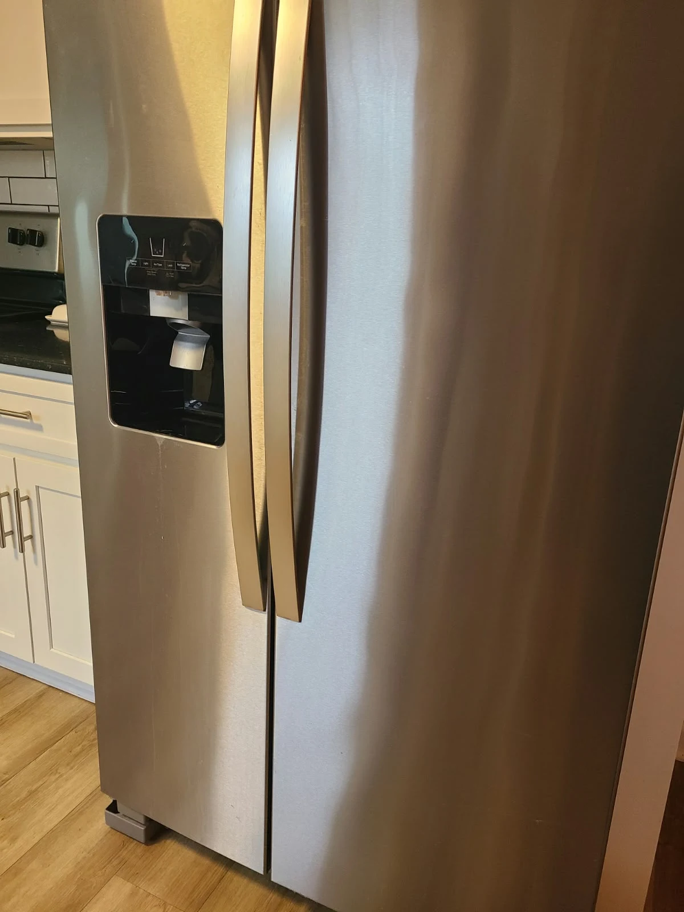
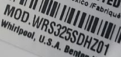
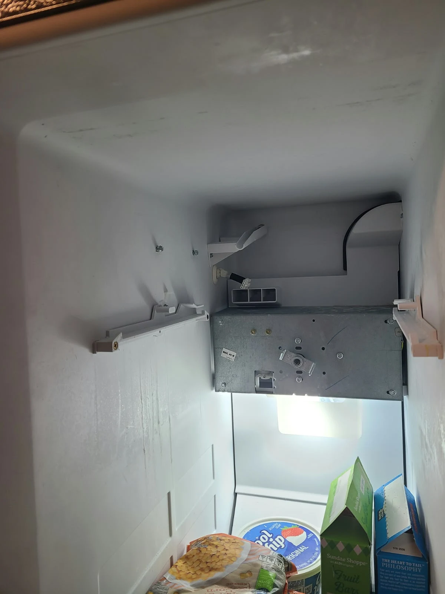
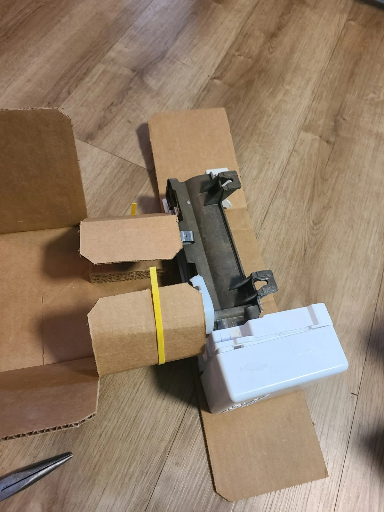
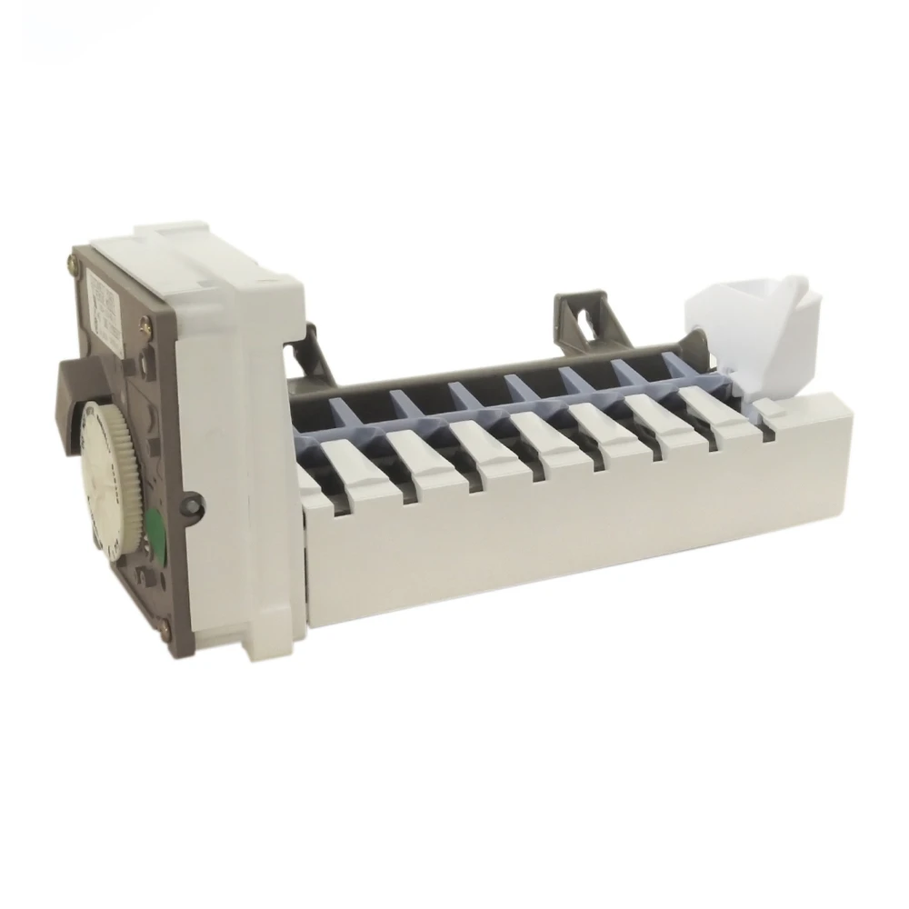
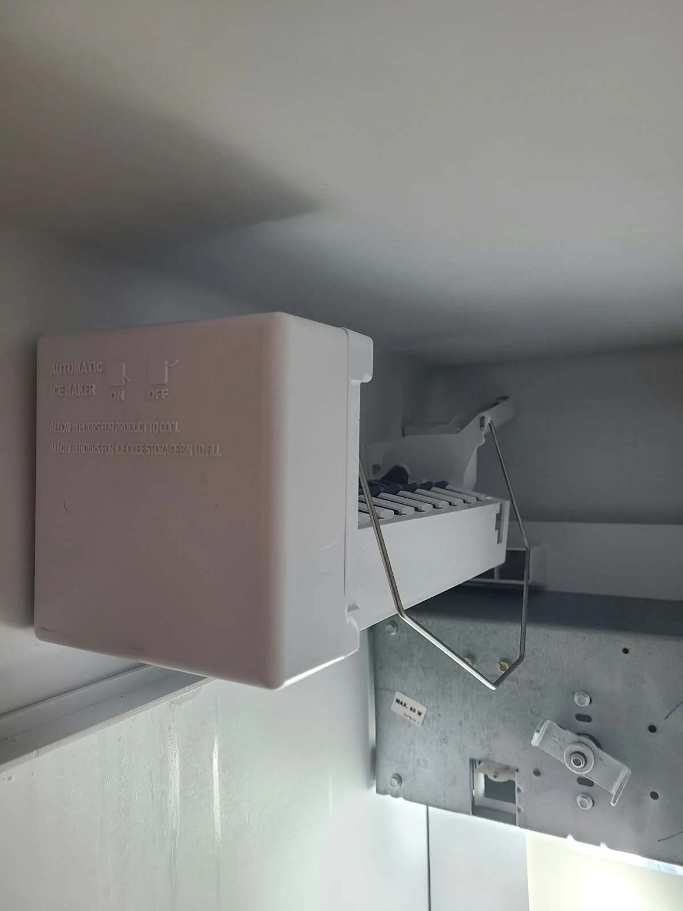
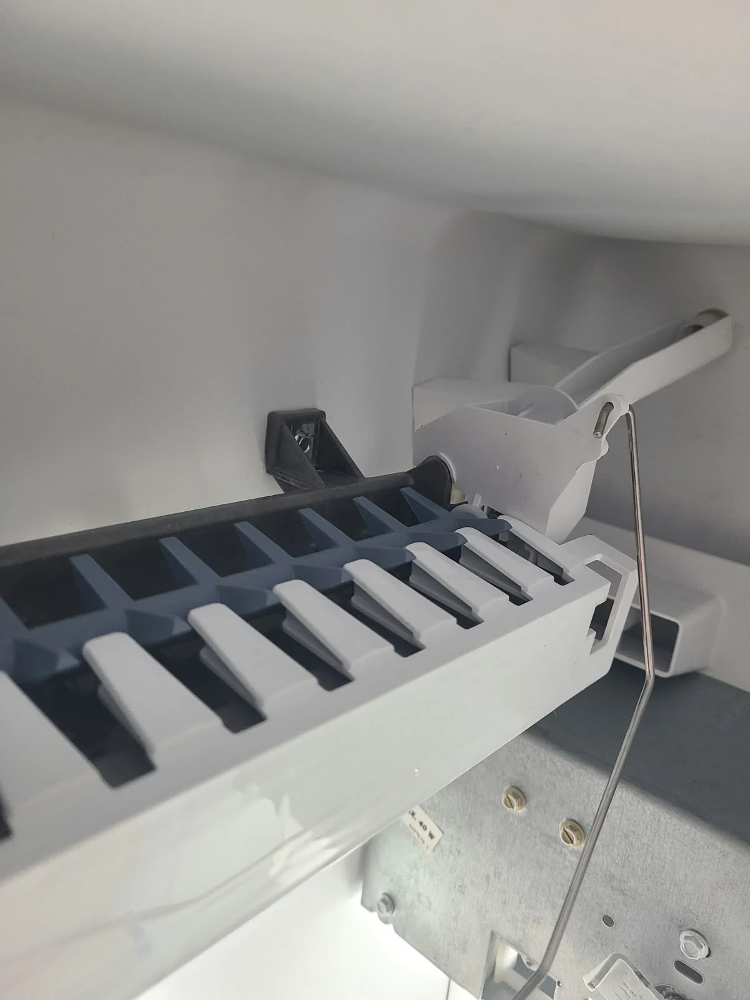

The Service Call: The Refrigerator Stopped Making Ice
A homeowner in Fishers, Indiana, called Alex Appliance Repair when the automatic ice maker in their Whirlpool side-by-side refrigerator stopped working. During the on-site diagnosis, we determined that the ice maker assembly needed replacement.
We installed a new ice maker in the freezer and checked its operation. The replacement filled with water and produced ice. The service photographs show the refrigerator, the mounting area behind the ice bin and the installed assembly.


Confirming the Whirlpool Model
The refrigerator label identifies this unit as Whirlpool WRS325SDHZ01. The close-up is cropped from the original appliance label and shows the full model, including the final 01 suffix.
The full model helps identify the correct replacement for a specific refrigerator. If you are requesting ice maker service, send a clear photo of the model field along with a description of what happens at the ice bin and dispenser.


Accessing the Ice Maker in the Freezer
The ice maker sits in the upper part of the freezer above the collection bin. With the old assembly removed, the mounting points and the electrical connector are visible in the service photo. The fill spout is at the back of the compartment.
The diagram in the visit overview shows the ice maker alongside the ice bin and other parts of the dispenser system. This repair focused on the assembly that takes in water and makes the cubes.
Replacing the Ice Maker Assembly
With the freezer mounting area exposed, the new ice maker was installed in the old assembly’s position. The service photo shows the replacement in its packaging. The component reference provides a clearer view of the mold and fill cup, which are partly hidden once the unit is in the freezer.




On the mounted assembly, the fill cup sits at the end of the mold and receives water from the freezer’s fill spout. The mold holds the water as it freezes. The assembly then releases the cubes into the bin for storage.


Testing Water Fill and Ice Production
After installation, we tested the replacement ice maker. Water entered the mold, and the unit produced ice. Those observations confirmed that the new assembly could complete the two functions that mattered for this service call.
The photograph shows the ice maker in its installed position. Water fill and ice production were confirmed by the operating check after installation.


Reading the Symptoms Before Ordering a Part
If the ice bin stays empty, tell the technician whether the ice maker has stopped completely or is making fewer cubes. If cubes are already in the bin but none come through the door, describe that separately. Ice production and dispensing involve different parts of the refrigerator.
Whirlpool lists the ice maker setting, water supply and filter among the possible checks for a side-by-side refrigerator that stops making ice. On this particular refrigerator, the on-site diagnosis called for replacing the assembly. Whirlpool guidance on ice production
Questions About Whirlpool Ice Maker Repair
Which Whirlpool refrigerator was repaired?
The unit was a Whirlpool WRS325SDHZ01 side-by-side refrigerator in Fishers, Indiana. The full model is visible in the original label crop above.
Does an empty ice bin always mean the ice maker needs replacement?
Several conditions can stop ice production. An inspection helps determine whether the issue is with the ice maker assembly, its settings or its water supply. Replacement was the diagnosis for this refrigerator.
What was checked after installation?
The new ice maker was tested for water fill and ice production. Water reached the mold, and the replacement produced ice.
Book Whirlpool Refrigerator Repair in Fishers
If your refrigerator has stopped making ice, share the full model and what you see in the ice bin when you contact us. Alex Appliance Repair provides refrigerator repair in Fishers, Indiana, including diagnosis of ice maker problems on Whirlpool appliances.
Call (463) 248-8429 or request service online.
Book refrigerator repair in Fishers